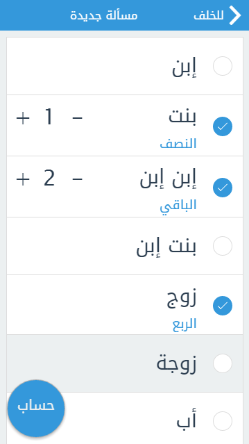
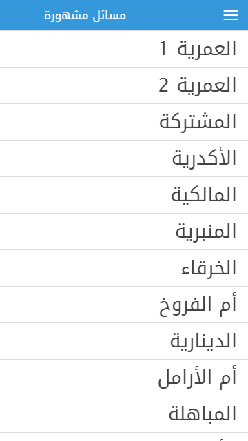

-
الواجهة الرئيسية
صممنا هذه التطبيقة لحساب مسائل المواريث وفقا لأحكام الشريعة الإسلامية مع إعتماد مذهب الإمام زيد بن ثابت -رضي الله عنه -
وهو مذهب جمهور العلماء، وقد راعينا حين إعداد هذه التطبيقة البساطة في الإستعمال والأسلوب. أعددنا المادة العلمية والفقهية لهذا البرنامج بإعتماد مصنفات الفقه المالكي المعتمدة، وبعض المصنفات الخاصة بهذا العلم، من أهمها:- شروح مختصر الشبخ خليل والتي هي عمدة الفقه المالكي.
- كتاب فرائض المختصر مع شرحه بهجة النظر.
- الرحبية وشرحها لسبط المارديني مع تعليقات الدكتور الباغا.
-
حدد الورثة
إختر الورثة من خلال القائمة ثم إضغط على زر "الحساب"أسفل الواجهة
- تشتمل التطبيقة على جميع المسائل والحالات الموجودة في الفقه وذلك في حدود قائمة الورثة التي تحتويها التطبيقة.
- التنبيه على الورثة الذين يحجبون من الميراث إذا كانو مذكورين في المسألة مما ييسر مهمة المستعمل غير العالم بمسائل الحجب وأنواعه.
- مراقبة المسائل المطروعة من حيث دقتها وإجتناب الأخطاء التي قد تحصل أثناء إدخالها عن طريق السهو.
 -
عرض الفريضة
حل المسألة بإستعمال الصيغة الفقهية (التأصيل والترجيح) مع جداول تفصيلية لذكر الأسهم والنسب المؤوية، مع التنبيه على مسائل العول مع ذكر ما تعول إليه.
مع إمكانية إضافة مبلغ التركة و مشاركة المسألة
-
قائمة بالمسائل المشهورة في كتب الفقه
إضغط على إسم المسألة لعرض نتائجها مفصلة.
 -
عرض الفريضة
حل المسألة بإستعمال الصيغة الفقهية (التأصيل والترجيح) مع جداول تفصيلية لذكر الأسهم والنسب المؤوية، مع التنبيه على مسائل العول وذكر ما تعول إليه.
مع إمكانية إضافة مبلغ التركة و مشاركة المسألة
-
قائمة بالمسائل المشهورة في كتب الفقه
إضغط على إسم المسألة لعرض نتائجها مفصلة.
-
قائمة بالمسائل المشهورة في كتب الفقه
إضغط على إسم المسألة لعرض نتائجها مفصلة.